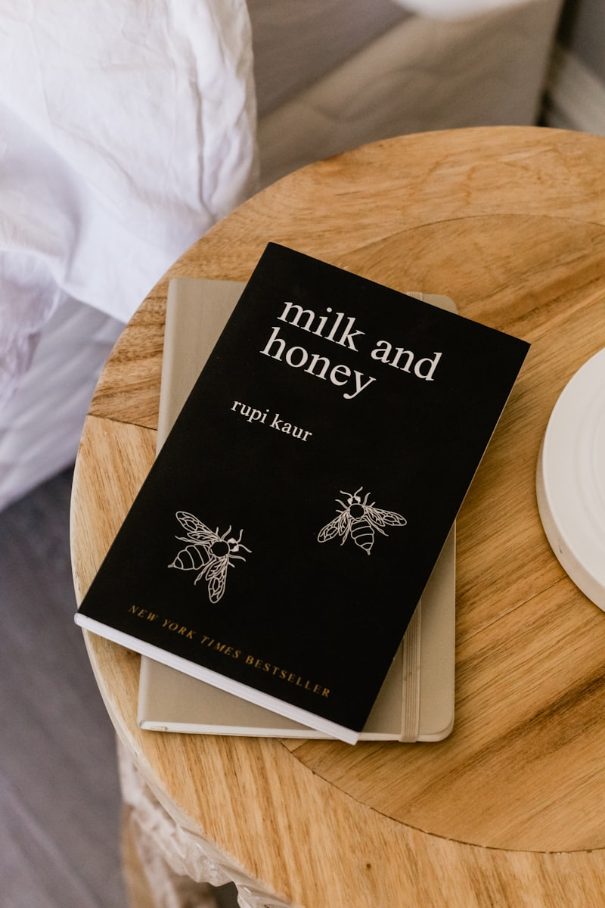

현대소설은 잘 읽는데 고전시가만 나오면 글자가 안 들어오는 학생이 있습니다. 고2 국어과외에서 흔한 벽이고, 가야고등학교처럼 고전 작품이 여러 편 범위에 들어가면 손해가 큽니다.
안 읽히는 이유는 감상력이 아니라 어휘입니다
"동창이 밝았느냐", "재 너머 사래 긴 밭을" 같은 구절이 막히는 건 단어를 몰라서입니다. 뜻을 모르는 채로 분위기만 잡으려니 졸립고, 선지에 나온 해석이 맞는지 판단할 근거가 없습니다. 고전은 감상 이전에 번역이 먼저입니다.
고전이 읽히는 훈련
- 현대어로 옮기기 — 작품 전체를 내 말로 한 번 번역해 적습니다.
- 반복 어휘 정리 — 고전에 자주 나오는 단어(어즈버, 하노라, 뉘)를 따로 모읍니다.
- 화자와 상황 — 누가 어디서 무엇을 하며 말하는지 한 줄로 씁니다.
- 정서 한 단어 — 연군인지 자연 예찬인지 안빈낙도인지 정합니다.
남은 기간 배분
고전은 배운 작품 안에서만 나옵니다. 편수가 정해져 있으니 작품별로 정리해 두면 확실히 회수됩니다.
- 1주차 — 범위 고전 작품을 현대어로 옮겨 적습니다
- 2주차 — 작품마다 화자·상황·정서를 한 장으로 정리합니다
- 3주차 — 학교 기출과 수업 필기에서 강조된 구절을 확인합니다
- 마지막 주 — 정리표만 반복해서 훑습니다
💡 티칭코칭은 부산 부산진구 가야고등학교 학생에게 맞춘 1:1 국어과외를 방문·화상으로 제공합니다. 고전은 번역부터 시작합니다.
👉 가야고등학교 학교별 과외 안내 · 부산진구 국어과외 선생님 · 부산진구 지역 과외 안내